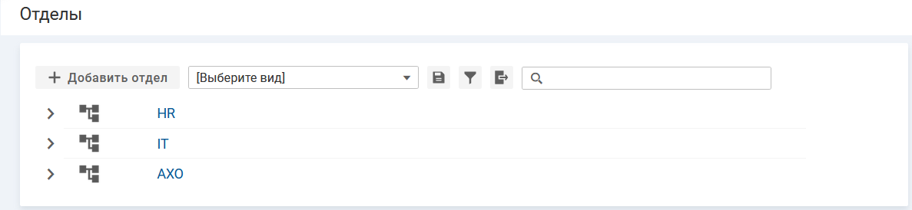
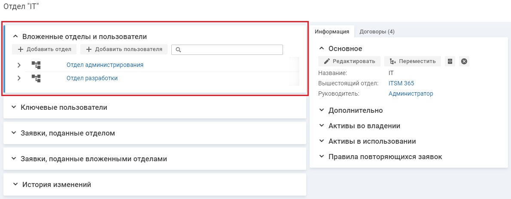
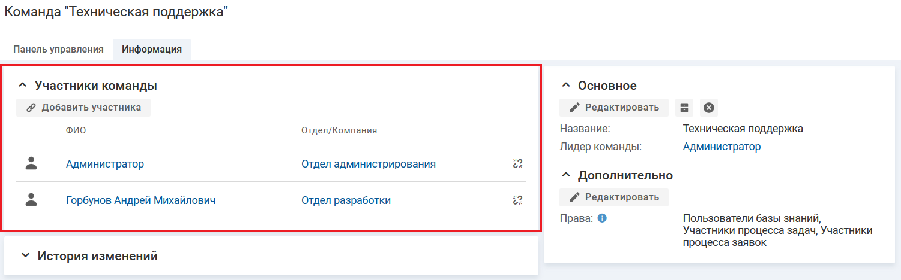
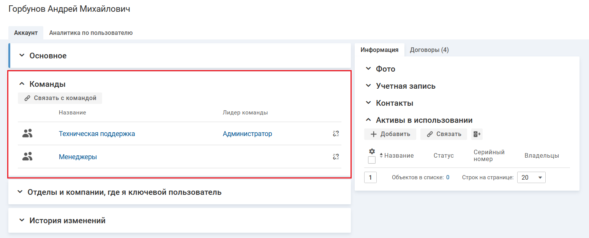

Наполнение оргструктуры
Наполнение оргструктуры
Информацию об отделах и сотрудниках компании можно ввести в систему несколькими способами: импорт из Active Directory или наполнить оргструктуру вручную.
Импорт из Active Directory
Импорт из Active Directory — это автоматическое создание отделов и сотрудников в
Если в Вашей компании используется каталог LDAP, то Вы можете отправить на наш электронный адрес cs@ITSM 365.com параметры подключения к каталогу:
- строка подключения к ldap: пример, ldap://dc:389;
- имя и пароль пользователя, который обладает правами на чтение;
- корень домена, из которого необходимо импортировать сотрудников: пример, OU=Типовая компания,DC=dc2, DC=local.
В процессе импорта из Active Directory в системе автоматически создаются объекты (отделы) со следующими значениями полей.
| Атрибуты отдела в ITSM 365 | Коды атрибутов в AD |
|---|---|
| Название | name |
| Вышестоящий отдел | parent |
В процессе импорта из Active Directory в системе автоматически создаются объекты (сотрудники) со следующими значениями полей.
| Атрибуты сотрудника в ITSM 365 | Коды атрибутов в AD |
|---|---|
| ФИО | displayName |
| Отдел | parent |
| Должность | title |
| Логин | sAMAccountName |
| Адрес электронной почты | |
| Мобильный телефон | mobile |
| Городской телефон | telephoneNumber |
| Внутренний телефон | ipPhone |
| Домашний телефон | homePhone |
Наполнение оргструктуры вручную
Чтобы наполнить оргструктуру вручную, в разделе "Оргструктура" необходимо создать отделы и в карточке отдела добавить вложенные отделы и сотрудников. По умолчанию в системе создан отдел с названием "ИТ-отдел", в который добавлен сотрудник "Администратор".
Наполнение оргструктуры выполняется пользователем с правами администратора (логин и пароль администратора были высланы Вам на электронную почту).
Подробное описание формирования оргструктуры см. в разделе
Краткое описание данных операций смотрите в разделах ниже.
Добавление отдела
Чтобы создать отдел верхнего уровня, в списке отделов нажмите кнопку "+ Добавить отдел".

Отделы - Добавить отдел
Чтобы создать вложенный отдел, в карточке отдела в блоке "Вложенные отделы и пользователи" нажмите кнопку "+ Добавить отдел".

Карточка отдела - Добавить отдел
На форме добавления отдела введите название отдела и нажмите кнопку "Сохранить".
Добавление сотрудника
Чтобы добавить нового пользователя в карточке отдела, в блоке "Вложенные отделы и пользователи" нажмите кнопку "+ Добавить пользователя".
Карточка отдела- Добавить пользователя"
На форме добавления пользователя заполните поля и нажмите кнопку "Сохранить".
Поля формы добавления пользователя:
- Фамилия — фамилия пользователя;
- Имя — имя пользователя;
- Отчество — отчество пользователя;
- Должность — должность пользователя в компании;
-
Email — адрес электронной почты.
На указанный email пользователю будут приходить оповещения о тех или иных активностях (создании заявки, комментария к заявке и т.д.)
- Логин — логин пользователя для входа в систему.
- Сгенерировать пароль и отправить пользователю на почту — возможность сгенерировать пароль, удовлетворяющий всем установленным в системе требованиям безопасности паролей, и отправить его пользователю на указанный адрес электронной почты.
-
Лицензия — регламентирует доступ пользователя в систему:
- Именная — пользователь с такой лицензией всегда может зайти в систему;
-
Конкурентная — пользователь может зайти в систему, если есть свободные лицензии этого типа.
Например, всего есть 2 конкурентных лицензии, они назначены на трех пользователей. Если первые два пользователя работают в системе, то третий не сможет войти, пока кто-нибудь не выйдет.
Подходит для пользователей со сменным графиком работы.
- Контактное лицо (нелицензированный) — пользователь всегда может зайти в систему, но только как получатель услуг: для создания заявки или ответа по своим открытым заявкам.
Добавление сотрудников в команды
Данный шаг выполняется независимо от способа наполнения оргструктуры.
После того как все сотрудники добавлены в ITSM 365, необходимо сформировать команды,которые будут отвечать за поддержку ваших клиентов
Команда — функциональная единица, которая никак не связана с оргструктурой. Участником команды может стать сотрудник любого отдела, при этом их количество не ограничено.
Ответственным за заявку можно назначить либо сотрудника в рамках определенной команды, либо команду в целом.
Список команд отображается на странице "Команды". По умолчанию в системе создана команда "Специалисты 1-ой линии", в ответственность которой будут попадать все новые заявки. При необходимости команду можно переименовать и добавить в систему новые команды.
Добавить сотрудника в команду можно двумя способами.
В карточке команды
Чтобы добавить пользователя в команду, в карточке команды перейдите на вкладку "Информация" и нажмите кнопку "Добавить участника" в блоке "Участники команды". На форме "Добавить участника" выберите пользователей и нажмите кнопку "Сохранить"

Карточка команды. Кнопка "Добавить пользователя в команду"
В карточке пользователя
Чтобы добавить пользователя в команду, в карточке пользователя нажмите кнопку "Связать с командой" в блоке "Команды". На форме "Связать с командами" выберите команды и нажмите кнопку "Сохранить".

Карточка пользователя. Блок "Команды"
- Быстрый старт. Шаг 2.